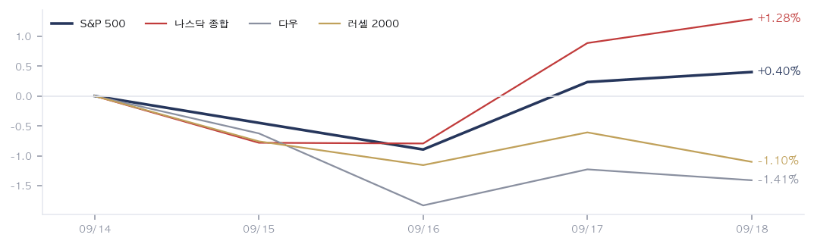
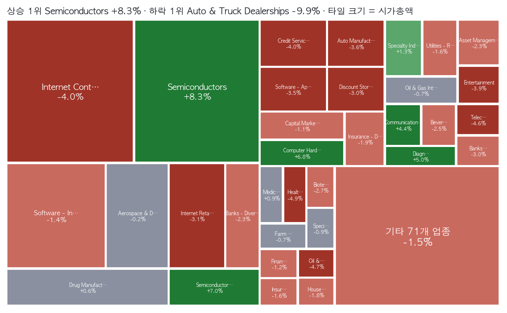
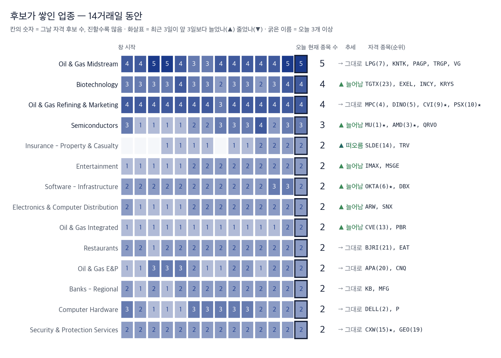

|
ZekiRex™ Apex US 주간 총결산 9/14~9/18
시장이 한 주 동안 한 일 · 1/3
데이터 기준 9/18 종가 |
ZekiRex™ |
|
|
| 저희가 정한 규칙이 고른 종목과 그 성적을 매일 그대로 싣습니다. 맞았든 틀렸든 지우지 않습니다. |
| • | 개정판 오늘 새벽에 보내 드린 판을 고쳐 다시 보냅니다. 아래가 달라진 것입니다. | | • | 지면을 셋으로 나눴습니다 — 시장이 한 주 동안 한 일 · 우리가 한 일 · 다음 주를 위한 것. | | • | 계좌 개시 이후 성적을 지수와 나란히 막대로 실었습니다. 그림마다 제목을 달았습니다. |
| |
한 주를 한 문장으로. 지수를 보면 오른 주이고, 종목을 세어 보면 내린 주입니다. S&P 500은 0.40%, 나스닥 종합은 1.28% 올랐습니다. 같은 닷새에 다우는 1.41%, 러셀 2000은 1.10% 내렸습니다. 저희가 보는 미국 1,039종목 가운데 닷새를 다 거래한 1,033종목은 평균으로 하락했습니다. 지수를 올린 것은 반도체 업종 하나입니다. 27종목이 8.35% 올랐고, 이 무리는 시가총액이 가장 큽니다. 컴퓨팅 설비와 그 전력을 파는 쪽이 함께 올랐고, 소비자에게 팔거나 시간을 파는 쪽이 함께 내렸습니다. 두 쪽을 가른 것은 5.00%로 마친 미 국채 10년물 금리입니다. |
| 이번 주 반드시 알아야 할 5가지 | 한 주에 일어난 일 가운데 돈에 영향을 준 것만 5가지입니다. 각 항목은 사실, 왜 그런가, 그래서 무엇인가 순입니다. | 1 | 지수와 종목이 반대로 끝난 한 주 사실 S&P 500은 0.40% 올랐습니다. 닷새를 다 거래한 1,033종목의 평균은 1.25% 내렸습니다. 다우는 1.41%, 러셀 2000은 1.10% 하락입니다. 왜 지수는 시가총액으로 무게를 답니다. 시가총액이 가장 큰 반도체 27종목이 그만큼 오르면, 나머지가 내려도 지수는 올라갑니다. 105개 업종 가운데 오른 곳은 24개뿐입니다. 행동 — 지수 수익률로 본인 계좌를 가늠하면 이번 주는 어긋납니다. 보유 종목이 반도체와 전력 설비 밖에 있다면, 지수가 말하는 한 주와 계좌가 말하는 한 주가 서로 다릅니다. 무엇을 들고 있었는지가 시장 방향보다 크게 작용한 주입니다. | | 2 | 정유는 오르고 원유는 내렸습니다 사실 정유·판매 업종은 7.44% 올라 업종 순위 2위입니다. 원유 생산 업종은 4.73% 내렸습니다. 서부텍사스산원유는 1.08% 내려 100.3달러로 마쳤습니다. 왜 시장이 값을 매긴 것은 원유 가격이 아니라 정제마진입니다. 원유를 싸게 사서 제품으로 파는 쪽은 원유가 내릴 때 마진이 넓어집니다. 캐는 쪽은 같은 하락이 그대로 매출 감소입니다. 행동 — 에너지를 한 덩어리로 묶어 보면 이번 주 방향을 놓칩니다. 정유주와 생산주는 12.17%포인트 벌어졌습니다. 에너지 비중을 들고 계시다면 그 안에서 어느 쪽인지를 확인해 보십시오. | | 3 | 소비와 신용에 붙은 업종이 닷새 내내 팔렸습니다 사실 자동차 판매 업종이 9.95% 내려 105개 업종 가운데 꼴찌입니다. 카지노·베팅은 8.50%, 음식점은 7.09%, 광고대행은 6.80% 하락했습니다. 왜 미 국채 10년물 금리가 5.00%로 마쳤습니다. 차를 할부로 파는 곳은 금리가 곧 수요이고, 음식점과 광고는 가계가 먼저 줄이는 지출입니다. 주간 하락 상위에도 오토네이션과 리시아모터스가 함께 있습니다. 행동 — 소비와 차입에 민감한 종목을 들고 계시다면, 9월 24일 코스트코 실적이 이 해석을 확인하거나 뒤집습니다. 미국 가계 지출을 가장 이르게 보여 주는 숫자입니다. | | 4 | 주간 상승 상위 10개 가운데 7개가 칩·광학·전력이었습니다 사실 셈테크가 25.81%, 비코가 20.57%, 코히런트가 19.08%, 아스테라랩스가 17.98%, 제너랙이 17.21%, 크레도가 17.19%, 샌디스크가 15.45% 올랐습니다. 왜 전기장비 업종도 7.18%, 반도체 장비 업종도 6.97% 올랐습니다. 데이터센터를 짓는 데 들어가는 것이 한 줄로 오른 것입니다. 엔비디아 최고경영자는 17일 내년에 팔 칩이 올해의 2배가 된다고 말했습니다. (CNBC) 행동 — 이 무리는 실적이 아니라 내년 설비 계획을 보고 오릅니다. 주문이 아니라 발언으로 움직인 주이므로, 이 테마를 들고 계시다면 설비 투자 계획이 실제 주문으로 바뀌는지를 분기 숫자에서 확인하셔야 합니다. | | 5 | 저희 4종목은 시장이 갈린 양쪽에 그대로 있었습니다 사실 마라톤페트롤리엄이 7.17%, 헤치에프싱클레어가 8.41%, 델테크놀로지스가 6.32%, 이리듐이 1.28% 올랐습니다. 계좌는 3.62%로 마쳤습니다. 왜 3종목이 이번 주 상위 6개 업종 안에 있습니다. 정유가 2개, 컴퓨터 하드웨어가 1개입니다. 이리듐만 통신서비스 업종에 있고 그 업종은 4.65% 내렸습니다. 이리듐은 4종목 가운데 유일하게 취득가 아래입니다. 행동 — 같은 배치가 반대로 돌면 정유 2종목이 함께 내립니다. 이번 주 성적은 종목을 고른 솜씨가 아니라 8월에 정해진 배치가 이번 주 시장과 맞았다는 뜻입니다. 맞지 않는 주에는 같은 이유로 같이 내립니다. |
|
| 한 주 총결산 | | 지표 | 금요일 종가 | 주간 | 연초 이후 | | S&P 500 | 7,650 | +0.40% | +11.55% | | 나스닥 종합 | 26,523 | +1.28% | +14.15% | | 다우 | 51,683 | -1.41% | +6.82% | | 러셀 2000 | 2,860 | -1.10% | +14.04% | | 비트코인 | $80,875 | +3.45% | -8.86% | | 달러인덱스 | 100.2 | +0.76% | +1.83% | | 미 국채 10년 | 5.00% | +0.04%p | +0.81%p | | WTI 원유 | $100.3 | -1.08% | +74.98% | | 금 | $4,425 | +1.68% | +2.20% |
표의 주간 등락은 뉴욕 9/14 종가에서 뉴욕 9/18 종가까지 5거래일입니다. 연초 이후 열은 같은 종가 시리즈로 잰 값입니다. 지수 4개가 둘씩 갈렸습니다. 나스닥 종합과 S&P 500은 올랐고, 다우와 러셀 2000은 내렸습니다. 대형 기술주를 많이 담은 쪽만 오른 것입니다. 비트코인은 3.45% 올라 80,875달러이지만 연초 이후로는 8.86% 아래에 있습니다. 달러인덱스가 0.76% 오른 자리에서 금도 1.68% 올랐습니다. 둘이 같이 오르는 것은 흔하지 않으며, 통화보다 금리와 안전자산 수요가 함께 움직였다는 뜻입니다. |
주간 지수 궤적  5개 선은 뉴욕 9/14 종가를 100으로 놓은 지수 4개와 비트코인의 경로입니다. 선이 한데 모이지 않고 위아래로 갈라진 채 끝났으며, 가운데가 비어 있는 것이 이번 주의 모양입니다. 지수 4개가 한 방향으로 가지 않은 주에는 시장 방향이 아니라 무엇을 들고 있었는지가 수익을 정합니다. |
업종 히트맵 — 한 주의 상승·하락 지도  타일 크기는 업종의 시가총액이고, 짙은 초록이 상승, 짙은 붉음이 하락입니다. 수익률 1위는 작은 칸이 아니라 반도체이고, 지도에서 가장 큰 칸이 바로 그곳입니다. 큰 칸이 움직일 때만 지수가 함께 오른다는 뜻입니다. 저희가 보는 종목의 평균은 하락이라 초록은 이 지도에서 소수에 그쳤습니다. |
| 한 주 움직인 것 | 주간 전체를 거래한 1,033종목 기준 · 따라가는 종목 1,039개 그 주 오른 종목 | FPS FPS | +37.71% | | SMTC SMTC | +25.81% | | TEM TEM | +25.12% | | VICR VICR | +20.57% | | COHR COHR | +19.08% | | ALAB ALAB | +17.98% | | GNRC GNRC | +17.21% | | CRDO CRDO | +17.19% | | BRKR BRKR | +16.58% | | SNDK SNDK | +15.45% |
| 그 주 내린 종목 | AN AN | -18.14% | | ARWR ARWR | -17.59% | | JBHT JBHT | -14.82% | | FOUR FOUR | -13.99% | | HUBS HUBS | -13.76% | | IONS IONS | -13.61% | | DKNG DKNG | -12.47% | | LAD LAD | -12.21% | | WU WU | -12.09% | | VVV VVV | -11.89% |
|
상하위는 뉴욕 9/14~9/18 종가 기준이며, 닷새를 다 거래한 1,033종목만 넣었습니다. 오른 쪽에는 셈테크, 코히런트, 아스테라랩스, 크레도, 샌디스크가 있습니다. 칩과 광학·메모리입니다. 제너랙과 포전트파워솔루션스처럼 전력 장비도 함께 올랐습니다. 내린 쪽은 성격이 다릅니다. 오토네이션과 리시아모터스는 자동차 판매입니다. 제이비헌트는 화물 운송, 시프트포와 웨스턴유니온은 결제, 드래프트킹스는 베팅입니다. 위쪽은 설비에 돈을 쓰는 쪽이고 아래쪽은 가계가 돈을 쓰는 쪽입니다. 같은 닷새에 두 무리가 정반대로 끝났습니다. |
|
|
우리가 한 일 · 2/3
데이터 기준 9/18 종가 |
ZekiRex™ |
|
|
이 뉴스레터에 나오는 종목 무리 (뉴욕 9/17 종가 기준 · 아래 수는 전부 같은 날) 지금 사야 한다면 — 대기 명단 1위부터입니다. 아래 다른 명단은 저희가 매일 세고 지켜보는 것들이며, 각 줄에 무엇을 어디서 보는지 적었습니다. | 자격 60종목 | 오늘 저희 기준을 모두 통과한 전부입니다. 「후보가 쌓인 업종」이 보여 주는 것이 이것입니다. | | 보유 4종목 | 저희가 실제로 들고 있는 것입니다. 규칙이 팔라고 할 때까지 둡니다. | | Rex 25 | 그 가운데 점수 상위 25종목입니다. 우리 눈이 맞았는지 매일 재는 명단이며, 살 순서는 아래 「대기」에서 보십시오. | | Rex US Best | 위 25종목에 모델 포트폴리오 보유 종목을 더해 만든 지수입니다(최대 29종목). 편지가 나갈 때마다 다시 짜므로 빠진 종목은 빠지고 새로 든 종목이 들어옵니다. 성적은 늘 S&P 500과 나란히 싣습니다. | | 대기 10종목 | 위 25종목 가운데 지금 살 수 있는 것만 남긴 것입니다. 자리가 비면 이 순서로 삽니다. | | 후보가 쌓인 업종 | 우리 후보가 어느 업종에 몰렸나입니다. 살 순서는 위 「대기」에서 보십시오. 업종의 강약은 아래 업종 히트맵에서 보십시오. |
|
| Rex US Best 의 한 주 | Rex US Best 의 이번 주 (9/14→9/17) | Rex US Best | +1.97% | | — | | S&P 500 | +0.23% | | +1.74%p | | 나스닥 100 | +1.09% | | +0.88%p |
뉴욕 9/14 종가에서 뉴욕 9/17 종가까지입니다. 비용을 뺀 값입니다. Rex US Best — 지수 출범(뉴욕 9/11 종가) 이후 | Rex US Best | +0.53% | | — | | S&P 500 | −0.22% | | +0.76%p | | 나스닥 100 | +0.29% | | +0.25%p |
4거래일입니다. 비용을 뺀 값입니다. 26종목 가운데 가장 많이 오른 3개와 가장 많이 내린 3개입니다. 뉴욕 9/11 종가에서 뉴욕 9/18 종가까지입니다. 가장 많이 오른 3개 | Okta, Inc. OKTA | +9.53% | | Advanced Micro Devices, Inc. AMD | +8.46% | | CVR Energy Inc. CVI | +8.12% |
| 가장 많이 내린 3개 | Oceaneering International… OII | −9.40% | | PACS Group, Inc. PACS | −5.90% | | Dave Inc. DAVE | −3.68% |
|
· 이번 주 새로 들어온 종목은 CHEF, TGTX, WT입니다. · 빠진 종목은 MGNI, MT, VG입니다. · 52주 최고가 자리에 있는 종목은 OKTA입니다. · 마지막 거래일 거래량이 평소의 두 배를 넘었습니다 — 오르며 WT +3.7%, TGTX +0.7%, MPC +0.7% 외 1종목 · 내리며 IRDM −1.5%, APA −1.3%, CXW −0.9% 외 3종목. |
| 보유 종목의 한 주 | | 종목 | 금요일 종가 | 주간 | 평가손익 | 손절가 | 손절 여유폭 | 일정 | | IRDM IRDM | $46.77 | +1.28% | -2.66% | $44.21 | +5.8% | — | | MPC MPC | $424.89 | +7.17% | +17.98% | $331.32 | +28.2% | 11/3 실적 | | DINO DINO | $115.90 | +8.41% | +21.07% | $88.07 | +31.6% | 10/29 실적 | | DELL DELL | $568.06 | +6.32% | +30.19% | $401.41 | +41.5% | 11/27 실적 |
계좌의 이번 주 | 계좌 | +3.62% | | — | | S&P 500 | +0.40% | | +3.22%p | | QQQ | +1.73% | | +1.89%p |
오른쪽은 계좌에서 그 지수를 뺀 값입니다 — 플러스면 앞섰고 마이너스면 뒤졌습니다. 계좌 개시(8/11) 이후 — 한 주보다 이쪽이 중요합니다 | 계좌 | +6.55% | | — | | S&P 500 | −1.01% | | +7.56%p | | QQQ | +0.42% | | +6.13%p |
8/11부터 9/18까지, 28거래일입니다. 보유 4종목이 모두 올라 계좌는 이번 주 3.62%로 마쳤습니다. 앞선 폭이 커 보이지만 까닭은 단순합니다. 3종목이 이번 주 가장 많이 오른 업종 안에 있었습니다. 마라톤페트롤리엄은 9월 18일 424.89달러로 52주 최고가에 마쳤고 거래량은 50일 평균의 3.91배였습니다. 금요일 하루만 보면 다른 그림입니다. 델테크놀로지스가 3.46%, 이리듐이 1.50% 내렸고 계좌도 0.31% 하락으로 한 주를 마쳤습니다. 이리듐은 취득가보다 2.66% 아래이고 손절가까지 5.80%가 남아 4종목 가운데 여유가 가장 적습니다. 현금은 69.78%이며 단기 국채 상장지수펀드에 들어 있습니다. 비중이 낮아진 것은 파는 결정이 아닙니다. 계좌에 자금이 더해지면서 같은 종목의 비중이 함께 낮아진 것이고, 자리 4개가 이미 차 있어 새로 사는 길은 자리가 비는 것뿐입니다. 매도 규칙은 그대로입니다. |
대기 명단 — 규칙이 다음에 사는 순서 | 순서 | 종목 | Zeki 강도 | 자격 지속 | 업종 | 고점 대비 |
|---|
| 1 | Micron Technology, Inc. MU | 98 | 14일째 | Semiconductors | -19.5% | | 2 | Advanced Micro Devices, Inc. AMD | 97 | 7일째 | Semiconductors | -6.2% | | 3 | Okta, Inc. OKTA | 96 | 14일째 | Software - Infrastructure | -0.2% | | 4 | PACS Group, Inc. PACS | 95 | 14일째 | Medical Care Facilities | -13.2% | | 5 | CVR Energy Inc. CVI | 95 | 14일째 | Oil & Gas Refining & Marketing | +0.0% | | 6 | Phillips 66 PSX | 94 | 6일째 | Oil & Gas Refining & Marketing | +0.0% | | 7 | Materion Corporation MTRN | 92 | 14일째 | Other Industrial Metals & Mining | -15.8% | | 8 | CoreCivic, Inc. CXW | 91 | 14일째 | Security & Protection Services | +0.0% | | 9 | Oceaneering International, Inc. OII | 91 | 14일째 | Oil & Gas Equipment & Services | -14.6% | | 10 | Dave Inc. DAVE | 91 | 14일째 | Software - Application | -19.4% |
저희 규칙은 자리가 비면 이 순서로 삽니다 — Zeki 강도가 높은 순, 같으면 값이 덜 흔들리는 순. 추천이 아니라 대기 순서의 서술입니다. 「아직 잡음」은 자격 1~2일째입니다. 후보가 쌓인 업종 (2026-09-17 종가)  이 그림 읽는 법 | 한 줄 | 한 업종의 하루하루입니다. 왼쪽이 창 시작, 오른쪽 굵은 테두리가 오늘입니다. | | 칸의 숫자와 색 | 그날 저희 기준을 넘은 종목 수입니다. 진할수록 많습니다. 값의 세기가 아니라 **몇 종목이 자격을 갖췄나**입니다. | | 오른쪽 | 현재 종목 수, 추세(▲ 최근 3일이 앞 3일보다 늘어남 · ▼ 줄어듦 · → 그대로), 그리고 오늘 자격을 갖춘 종목입니다. 굵은 업종 이름은 오늘 3개 이상입니다. | | 위에서 아래로 | 오늘 후보가 많은 순입니다 — 머릿수입니다. 업종의 강약은 업종 히트맵에서 보십시오. | | 왜 순위가 아닌가 | 하루치 순위는 72%가 매일 바뀌고 큰 점프의 46%가 되돌아옵니다(실측). 며칠 지속 카운트는 그렇지 않습니다. |
자격 명단에 들고 난 종목 (2026-09-16 → 2026-09-17) 진입: EZPW
탈락: FLYW, NEM
창 전체(14거래일) 내내 자격을 지킨 종목 34개. 왜 들어오고 나갔는지는 적지 않습니다 — 원천에 이유가 없고, 저희는 추정하지 않습니다. 관측용이며 매매 신호가 아닙니다. 저희 규칙에는 업종 순환 논리가 없고, 2026-08-31 업종 자금 흐름 검정에서 예측력은 확인되지 않았습니다. 하루 순위가 아니라 며칠 지속되는가를 셉니다. |
|
|
다음 주를 위한 것 · 3/3
데이터 기준 9/18 종가 |
ZekiRex™ |
|
|
| 그 밖에 알아야 할 것 | | 앤트로픽, 장외에서 2조 달러를 넘겼습니다 · 상장 전 거래에서 앤트로픽의 가격이 2조 달러를 넘었습니다. 마지막 비공개 조달 때의 2배가 넘는 값이며 증권신고서는 아직 공개되지 않았습니다. (Euronews) → 이번 주 반도체 업종을 끌어올린 것과 같은 기대를 값으로 옮긴 것입니다. 공개된 재무제표 없이 매겨진 값이므로, 이 테마의 수요 숫자를 읽을 때 근거가 무엇인지 함께 보셔야 합니다. | | 영란은행, 국채 1,460억 파운드 매각 방식을 바꿉니다 · 영란은행이 기준금리를 3.75%로 묶은 자리에서 보유 국채 1,460억 파운드를 재무부에 되파는 방안을 함께 내놓았습니다. 시장에 직접 파는 방식을 바꾸는 것입니다. (The Guardian) → 장기 국채를 누가 얼마나 시장에 내놓느냐는 미국 금리에도 닿습니다. 이번 주 미 국채 10년물이 5.00%에서 내려오지 않은 것과 같은 축의 이야기입니다. | | 솔리다임, 뉴욕주 낸드 공장을 검토합니다 · SK하이닉스의 미국 손자회사 솔리다임이 낸드 공장 건설을 검토하고 있으며 뉴욕주 북부가 유력 후보지입니다. 회사는 확정된 것이 없다고 밝혔습니다. (Money Today · Reuters) → 메모리 증설 계획이 미국 안으로 들어오는 흐름입니다. 이번 주 샌디스크가 15.45% 오른 것과 같은 재료이며, 공장은 짓는 데 몇 년이 걸리므로 올해 공급에는 영향이 없습니다. | | 워런 버핏이 회장에서 물러납니다 · 96세의 워런 버핏이 버크셔해서웨이 회장에서 물러나고 아들 하워드가 뒤를 잇습니다. 60년 넘게 이끈 1조 달러 규모 회사입니다. (The New York Times · The Wall Street Journal) → 버크셔는 이번 주 저희 기준을 넘은 64종목에 들어 있지 않습니다. 값보다 뒤를 잇는 사람에 대한 소식이며, 보험과 철도 비중이 큰 회사라 이번 주 내린 업종 쪽에 가깝습니다. | | 이번 주 읽은 매체와 그 보도를 근거로 적었습니다. 한 곳만 근거인 항목은 그 매체 이름을 그대로 적었습니다. |
| 한국과 미국을 잇는 것: 뉴욕에서 보면 이번 주 아시아의 금리 인상이 곧 미국 이야기였습니다. 일본은행이 9월 18일 기준금리를 1.0%에서 1.25%로 올렸습니다. 1995년 이후 가장 높은 수준입니다. (가디언) 우에다 총재 회견 뒤 달러는 156.90엔까지 올랐습니다. (블룸버그) 일본 금리가 오르면 일본 자금이 미국 채권을 살 이유가 줄어듭니다. 이번 주 미 국채 10년물이 5.00%에 머무른 배경에 이 흐름이 있습니다. |
| 다음 주 반드시 알아야 할 5가지 | 이번 주 시사점에서 이어지는 5가지입니다. 무엇을 보면 되는지까지 적었습니다. | 1 | 9/24 코스트코 실적 — 소비가 정말 꺾였는지 사실 코스트코가 9월 24일 실적을 냅니다. 시장이 보는 이익 증가율은 11.6%입니다. 같은 날 티디시넥스도 발표하며 예상 증가율은 30.7%입니다. 왜 이번 주 가장 많이 내린 업종은 자동차 판매와 음식점이었습니다. 값은 이미 가계 지출이 줄어든다는 쪽에 서 있습니다. 코스트코는 그 가정을 가장 이르게 검증하는 숫자입니다. 행동 — 음식점과 자동차 판매 종목이 이번 주 내린 값에 사실이 붙는지가 이날 갈립니다. 숫자가 좋으면 이번 주 하락은 금리 탓이고, 나쁘면 수요 탓입니다. 두 해석은 다음 몇 주 대응이 서로 다릅니다. | | 2 | 시진핑·트럼프 정상회담 — 일정은 아직 나오지 않았습니다 사실 시진핑 중국 국가주석이 다음 주 워싱턴을 방문합니다. 9월 20일 뉴욕에서 스콧 베선트 재무장관과 허리펑 부총리가 세부를 맞춥니다. (사우스차이나모닝포스트·파이낸셜타임스) 왜 이번 주 오른 업종은 반도체와 반도체 장비입니다. 두 업종 모두 수출 규제와 관세에 직접 걸려 있습니다. 회담 결과는 이 무리의 내년 설비 계획을 바로 건드립니다. 행동 — 칩과 장비를 들고 계시다면 이 회담은 실적보다 큰 변수입니다. 합의가 나오기 전에 비중을 크게 늘리는 것은 한 번의 외교 일정에 거는 것과 같습니다. | | 3 | 10년물 금리 5.00% — 이 자리에서 다시 시작합니다 사실 미 국채 10년물 금리는 이번 주 0.04%포인트 올라 5.00%로 마쳤습니다. 연초 이후로는 0.81%포인트 상승입니다. 왜 이번 주 갈린 두 무리를 가른 것이 이 금리입니다. 할부로 파는 자동차 판매 업종이 9.95% 내렸고, 현금을 쌓아 둔 설비 쪽은 올랐습니다. 금리가 이 자리에 머무르면 같은 분리가 이어집니다. 행동 — 차입이 많은 종목을 들고 계시다면 이번 주 하락은 일시적 조정이 아닐 수 있습니다. 금리가 내려가야 되돌아오는 구조이므로, 회사 실적보다 금리 흐름을 먼저 보셔야 합니다. | | 4 | 정제마진이 이번 주 폭을 유지하는지 사실 정유·판매 업종은 7.44% 올랐고 원유 생산 업종은 4.73% 내렸습니다. 서부텍사스산원유는 100.3달러로 1.08% 하락 마감했습니다. 왜 원유가 내리면서 정제마진이 넓어진 것이 이번 주 정유주 상승의 까닭입니다. 원유가 다시 오르면 같은 구조가 반대로 돌아 정유주가 먼저 내립니다. 행동 — 저희 4종목 가운데 2종목이 정유입니다. 에너지 비중을 보고 계시다면 원유 가격보다 원유와 제품의 가격 차이를 따라가는 것이 이 구간에서는 더 정확합니다. | | 5 | 설비 투자 발언이 주문으로 바뀌는지 — 마이크론 9/30 사실 마이크론은 9월 30일 실적을 냅니다. 저희 기준을 넘은 64종목 가운데 제키 강도가 98로 가장 높습니다. 대만 핵심 생산거점에서는 파업 가능성이 거론됩니다. (이데일리) 왜 이번 주 칩과 광학이 오른 것은 주문이 아니라 내년 계획 발언 때문입니다. 마이크론 숫자는 그 계획이 매출로 들어왔는지 보여 주는 첫 확인입니다. 파업은 공급을 줄여 값을 올리는 쪽입니다. 행동 — 발표일은 다음 주 뒤입니다. 그 전에 이 테마를 늘리는 것은 확인되지 않은 수요에 값을 미리 주는 것입니다. 메모리를 들고 계시다면 이날 전후의 변동 폭을 감당할 수 있는 크기인지 먼저 보십시오. |
|
| 다음 주 핵심 | | 9/20 (일) 뉴욕 | 베선트 재무장관·허리펑 부총리 실무 협의 정상회담 의제가 여기서 정해집니다. 반도체 수출 규제가 표에 오르는지가 칩 업종의 다음 주를 정합니다. | | 9/24 (목) 미국 | 코스트코 실적 (예상 이익 증가율 11.6%) 이번 주 음식점과 자동차 판매가 내린 것이 금리 탓인지 수요 탓인지를 가르는 숫자입니다. | | 9/24 (목) 미국 | 티디시넥스 실적 (예상 이익 증가율 30.7%) 정보기술 제품이 실제로 얼마나 팔렸는지를 보여 줍니다. 설비 발언과 실제 출하의 차이가 드러나는 자리입니다. | | 일정 미정 (다음 주 중 워싱턴) | 시진핑 국가주석·트럼프 대통령 정상회담 관세와 수출 규제가 함께 걸려 있어 반도체와 장비 업종이 한 번에 움직일 수 있습니다. | | 일정 미정 (대만) | 마이크론 대만 생산거점 파업 여부 메모리 공급이 줄면 값이 오릅니다. 이번 주 15.45% 오른 샌디스크처럼 메모리 종목 전체가 함께 반응합니다. |
|
다음 주는 이번 주가 그은 선을 실적이 검증하는 주입니다. 시장은 이미 두 쪽으로 갈라져 값을 매겼습니다. 설비에 돈을 쓰는 쪽은 올랐고 가계가 돈을 쓰는 쪽은 내렸습니다. 다만 오른 쪽의 근거는 아직 발언과 계획이고, 내린 쪽의 근거는 그 금리입니다. 9월 24일 코스트코와 티디시넥스가 양쪽에 각각 숫자를 붙입니다. 소비가 예상만큼 나쁘지 않으면 이번 주 하락한 업종부터 되돌아올 여지가 있습니다. 반대로 정보기술 출하가 기대에 못 미치면 이번 주 오른 업종이 먼저 조정을 받습니다. 그 사이에 미국과 중국의 협의가 반도체 관련 조건을 바꿀 수 있습니다. 저희는 자리 4개가 차 있어 다음 주에도 새로 사지 않습니다. 파는 규칙만 그대로 돌아갑니다. |
| 출처: 야후 파이낸스, 16:00 ET · ZekiRex 선별 피드 (9/18 기준, 8,049종목) · 야후 파이낸스 실적 일정 · 가디언, 블룸버그, CNBC, 유로뉴스, 뉴욕타임스, 월스트리트저널, 로이터, 머니투데이, 이데일리, 사우스차이나모닝포스트, 파이낸셜타임스 · 등급·순위·판정·계좌 수치는 모두 ZekiRex 자체 산식의 결과입니다. |
|
본 리포트는 정보 제공 목적이며 개별 투자 자문이 아닙니다. ZekiRex™ Apex US는 1,000만 달러 규모의 모의 포트폴리오를 규칙 기반으로 운용합니다. 실제 계좌도, 주문도, 사고판 일도 없습니다. 표시된 성과에는 수수료와 세금, 매매 시 가격 미끄러짐이 반영되지 않았습니다. 종목 자료에는 상장폐지된 회사가 빠져 있습니다. 살아남은 회사만 세는 셈이라 성과가 실제보다 높게 나옵니다. 과거의 성과는 미래를 보장하지 않으며, 투자에는 원금 손실 위험이 따릅니다. |
| This is the Rex Way, ZekiRex™ |
|